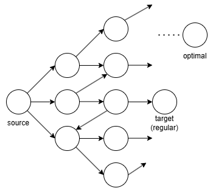

Understanding Superoptimization
Compiler Optimizer
Optimization problem, in general, a problem to seek the best solution given a few constraints. The linear programming is a good example. You maximize \(100x + 40y\) subject to \(100x + 40y \le 3000\) and \(10x \le 100\). Both \(x, y\) are positive. Drawing the linear equations on the coordinate plane, we find the optimal point.
A compiler optimizer however does not find the optimal solution. (https://blog.regehr.org/archives/923) Rather, it only looks for an improved solution. This is probably due to the cultural difference between mathematics and computer science. In computer science, we often call we've done “performance optimization” if something runs faster than before. But we cannot guarantee that the “performance optimization” is actually the best thing that could be done.
If we formalize a compiler optimizer in a simple manner, it is just a function that maps a program (source) to another program (target). The constraint here is that the source and target program must be semantically identical (functional equivalence). In other words, the target program must output the same as the source program for every possible input. If we consider undefined behaviors of a program, we may have to relax the constraint of the functional equivalence to the refinement relation. However, that is the out of the scope of this article.
\[ f(P_{src}) = P_{tgt} \\ \] \[ \forall{x}.P_{src}(x) = P_{tgt}(x) \]
A common compiler optimizer applies a series of code transformations to the source program, improving the program performance each step. For example, LLVM typically applies InstCombine transformations to a small chunk of instructions one by one, typically reducing the number of instructions or replacing to a faster chunk of instructions.
Superoptimizer
In contrast, a compiler superoptimizer makes more sense in the mathematical meaning of “optimization”. It tries to find the optimal program that is semantically the same to the source program but faster than that. The reason I mention “it tries” is that it can be intractable to guarantee that the answer is actually optimal. Therefore, there are superoptimizers that do not guarantee the optimality.
For example, Denali guarantees that the optimized target program is the optimal one. It search for the optimal one by SAT solving. For example, it asks the solver “there is no program consists of fewer than k instructions”. It produces a counter example (the optimized program) when the query results in UNSAT. It encodes the semantics of the source program as well as those of available instructions. Therefore, it is limited to high computational cost of the SAT solver while Denali nicely presents the core idea of what superoptimizer can do.
Due to the computational limitation, later superoptimizers such as STOKE and Souper often abandon the theoretical optimality guarantee to achieve scalibility, which is important to real-world application. For example, STOKE adopts random search. It employs mutation operators with a fitness function to find a better target program. In addition, Souper limits its search space to remain efficient. Therefore, there is no strong guarantee for the optimality.
In summary, unlike a regular compiler optimizer, superoptimizers aim to find the optimal target program that is aligned with the source program. Even if they cannot guarantee the optimality, it still systematically search for the better-than-better answer.
Why Superoptimizers Can Produce Better programs?
Now we understand that superoptimizers can produce better target programs than regular optimizers. But why compiler optimizers fail to produce the optimal programs while superoptimizers can do? To answer this, let's frame the superoptimization problem as a search problem.

The search space can be thought of a graph where each node is a program and nodes are connected via a correct code transformation (e.g., peephole optimization). Also, let's assume the source program consists of a few instructions. Then the superoptimization problem is to find a reachable node which has the lowest cost (e.g., CPU-cycles) from the source program.
A compiler optimizer only applies code transformations upto a certain times (https://reviews.llvm.org/D71145). Therefore, only a single path of the search space is traversed, missing a lot of other programs in the search space. (See the path from the source to the target program in the graph.) This approach can be viewed as greedy search, taking the a performance-improving code transformation at each stage.
Greedy search does not guarantee optimality in general. Therefore, a superoptimizer traverses a lot more programs in the graph. To traverse programs systematically, typically a program synthesizer is used to enumerate the programs in the search space. As a result, trading-off the searching cost, superoptimizers can produce the optimal program or a better program than the program produced by a compiler optimizer.
Surfing the Search Space with e-graph
While the search space graph only depicts edges of the correct code transformation, a program synthesizer employed by the superoptimizers does not always produce equivalent programs. Therefore, it discards a lot of semantically different programs during the search process. For example, Souper uses a counterexample-guided inductive synthesizer to optimize the process. It continuously feeds the synthesizer the counterexamples (semantically different programs) to improve the search efficiency. The semantic difference can be checked via a simple testing or rigorous correctness checking.
While the approach can enumerate programs in the graph systematically, there is room for improvement during the search process. For example, if we can always apply correct code transformations, we don't have to discard programs in the middle of the process. This kind of approach is becoming popular with the emergence of e-graph. High quality projects and researches of e-graph like egg, SEER and SmoothE shows the popularity.
An e-graph is a compact data structure that represents equivalent expressions. By applying a correct code transformation, we can aggregate programs (expressions) of a same equivalence class. This means that we can efficiently traverse the search space graph without discarding semantically incorrect programs once the e-graph is constructed.
In fact, Denali takes this approach. Starting from an e-graph of the source program, it applies axioms of the avaiable operations, extending the e-graph. For example, it enriches the e-graph with the commutativity of addition and multiplication. As a result, it encodes all reachable programs in its search space and query the solver with the encoded e-graph.
Bulding such a e-graph is tricky since there can be a missing code transformations. Therefore, it might require the program synthesis again to discover such transformations. However, there are already a lot of code transformation rules in the production compilers such as LLVM and GCC. If we can automatically extract the rules and build an e-graph, superoptimization could be improved a lot.